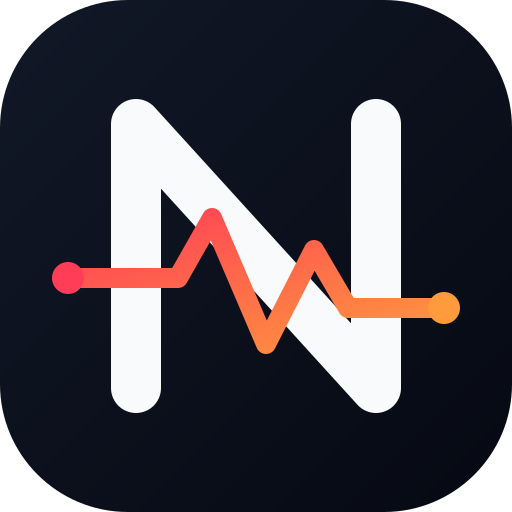

Investigation detail
Select an incident
Evidence, findings, policy decisions, and notification state appear here.

Restricted access
Operator data and controls stay hidden until bearer token validation succeeds.
Operator conversation
Investigation detail
Evidence, findings, policy decisions, and notification state appear here.
Remediation detail
Review evidence and diff, then approve, reject, or submit an approved change as a GitHub PR.